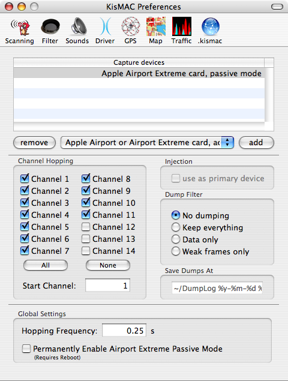

| KisMAC Manual - Getting started with KisMAC |
Before you can begin using KisMAC you must open the Preferences pane and select the appropriate driver for use with your wireless card.
- Open the Preferences pane from the KisMAC menu and click on the Driver
icon.

Note: Each of these drivers will prevent you from using your wireless
card to access networks while KisMAC is running. KisMAC must use one
of these drivers to scan for networks. For more information about driver
capabilities, see the expanded driver section later in this manual.
- There are six different drivers to choose from:
- The first is the Apple Airport or Airport Extreme card, which operates in active mode. This means that you can still use your wireless card, but you will not have full functionality when using KisMAC. This is the driver you want to use if you have an Apple branded Airport card and all you want to do is search for networks. If you have an Apple Airport, or Apple Airport Extreme card and would like to operate it in active mode, choose this driver. If you just want to simply wardrive, choose this driver - it will not see closed networks, but closed networks are nearly always WEP or WPA'ed, which are no use to you. You can't crack networks with this driver.
- The second driver is for the Apple AirPort Extreme card in passive mode. This has recently been reverse-engineered and now works in passive mode.
- The second driver is for the Apple Airport card, passive mode. You will not be able to access any networks while in passive mode, but you will have expanded capabilities in KisMAC. This driver does not work with Airport Extreme cards (use the previous one). If you have an Apple Airport card, and you want to operate it in passive mode, choose this driver.
- The third driver is for Prism2/Orinoco/Hermes cards. It operates only in passive mode. If you have a Prism2, an Orinoco, or a Hermes card, choose this driver.
- The fourth driver is for Cisco Aironet cards. It operates only in passive mode. If you have a Cisco Aironet card, choose this driver.
- The fifth driver is for if you have a USB wireless adapter with a Prism2 chipset. It operates only in passive mode. If you have a USB device with a Prism2 chipset, choose this driver.
- The sixth driver is for Atheros based cards. It operates only in passive mode. If you have a Atheros based card, choose this driver.
- KisMAC also allows permanently enabling Airport Extreme to operate in passive mode. To enable this feature check the box at the bottom of the window (requires reboot). Note: If enabled, your wireless card can be used by other applications however, this can cause your data to be captured in the dump and result in confusion.
- Your password will be asked for each time you start KisMAC because the
drivers must be loaded and unloaded. If you would like KisMAC to load the
drivers without asking for your password, check the Make scripts SUID
root checkbox. You can also use the KisMAC Driver Tool, installed with
KisMAC, to start or stop the drivers.
After selecting a driver, you can now use KisMAC to scan for networks by clicking on the scan button in the main window. It is recommended however, that you go through all of the preferences in order to get the best KisMAC experience.
Scanning Preferences
- WI-FI networks have 11 possible channels (14 non-us, 13 in Europe). A
typical access point will be available on 3 channels a time, since these
channels actually overlap. In order to detect all networks, KisMAC will
make the wireless card "hop" between all selected channels. The frequency
field changes how often KisMAC changes channels. Before you select
channel 12-14 please make sure your card can use this channels, otherwise
strange side effects might occur, such as phantom base stations being
detected, inability to detect anything else, or simply just nothing - the
wireless card may shut down.

- Once you find a network that you want to monitor, it is recommended
that you only select the channel the network uses in order to capture
more data from that network. Note: Cisco Aironet cards perform hopping
internally and the settings will be disabled when using one of these
cards.
- The dump filter settings will tell KisMAC to create a PCAP file with
the following filtering options:
- The default setting is no dumping, KisMAC simply discards the data.
- Keep everything - All intercepted traffic is written to the log file.
- Data only - Only packets containing data are written to the log file; empty, "I'm here," traffic is ignored, but any packets with weak initialization vectors (IVs) will be logged.
- Weak frames only - only packets with weak initialization vectors will be written to the log file.
Sound Preferences
- KisMAC can be set to play different sounds when different types of
networks have been detected. This can be helpful for wardriving when you
might not be able to look at the computer screen.
- WEP enabled network: play the selected sound when an encrypted network is detected.
- WEP disabled network: play this sound when an open network is detected.
- Play every x packets: This option is useful when to gathering data to attempt to crack a network. Alerts you when a certain amount of data has been collected. See the cracking chapter later in this manual.
- Optionally, KisMAC can speak the names (SSID) of detected networks, also useful while wardriving.
These are the basic preferences that you need to know in order to get started with KisMAC. There are many more advanced features that are covered in depth in their own chapters of the manual.
Table of common card brands:
| Manufacturer | Model | Chipset | Compatibility |
| 3Com | 3CRWE154G72 | PrismGT | Should work |
| Addtron | AWP-100 | PrismII | Should work |
| AWP-101 | PrismII | Should work | |
| Apple | Airport | Hermes | Verified |
| Airport Extreme | Broadcom | Verified - works in passive mode now! | |
| Asante | AL1011 | PrismII | Should work |
| Belkin | F5D6020 (old) | PrismII | Should work |
| F5D7010 | Broadcom | Should work in active mode only | |
| Buffalo | WLI-CB-G54 | Broadcom | Should work in active mode only |
| Cisco | AIR-PCM35x | Aironet | Verified |
| AIR-LMC35x | Aironet | Should work | |
| Compaq | WL-100 | PrismII | Verified |
| D-Link | DWL-650 (old) | PrismII | Verified |
| DWL-G520 | Atheros | Should work | |
| LinkSys | WPC11 | PrismII | Should work |
| WPC54G | Broadcom | Should work in active mode only | |
| WPC55AG | Atheros | Verified | |
| WUSB11 ver. 2.5 | PrismII | Verified | |
| Proxim | Orinoco 11b/g | Atheros | Verified |
| Lucent | Orinoco Silver 11Mbit | Hermes | Verified |
| Orinoco Silver 2Mbit | Hermes | Verified | |
| Orinoco Gold 11Mbit | Hermes | Should work | |
| Netgear | MA401 | PrismII | Should work |
| WG511 | PrismGT | Should work | |
| WG511T | Atheros | Should work | |
| SMC | SMC2632W (old) | PrismII | Should work |
| ZCOMAX | XI-300 | PrismII | Should work |
| XI-815 | PrismII | Should work | |
| Zoom | 4105 | PrismII | Should work |
| The Aironet, Atheros, PrismII and Hermes chips are
natively supported by KisMAC. The Broadcom chipset is supported over the Airport Extreme driver in passive mode now. All other chipsets are currently unsupported. |
|||
| back | Tell me more |